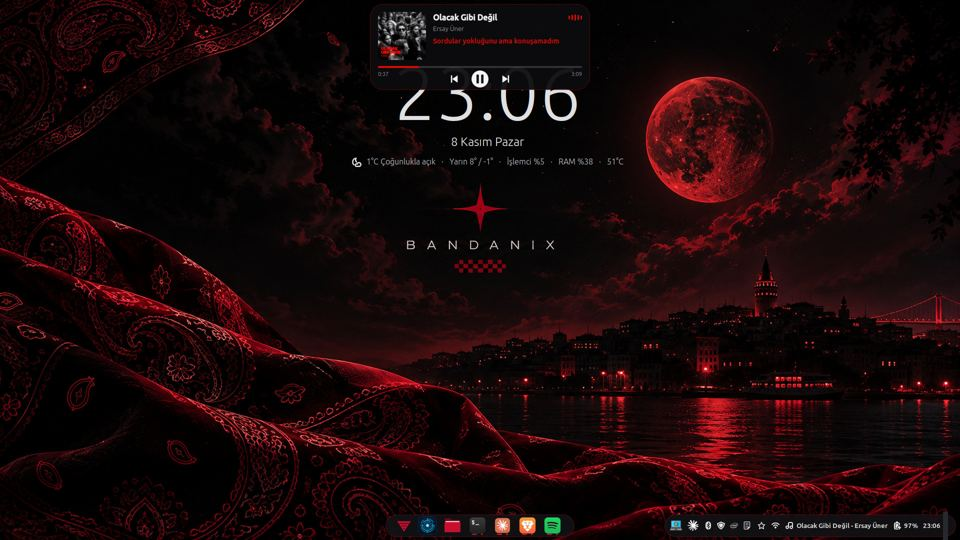

Bilgisayar mühendisliği öğrencisiyim. Yerel çalışan yapay zekâ asistanları, Linux masaüstü araçları ve mobil uygulamalar geliştiriyorum.
--.-- Tokat · Gaziosmanpaşa Üniversitesi · 4. sınıf
Projeler
Hepsi ücretsiz, açık kaynak ve bilgisayarı yormayacak şekilde yazıldı.
Sesli asistan · 2026
Jarvis
Tamamen yerelde çalışan, Türkçe konuşan masaüstü asistanı. Hiçbir ücretli API kullanmaz. Bilgisayar Uygulamaları II dersinde proje olarak da geliştiriyorum.
"Hey Jarvis" ile uyanır, konuşarak komut alır
Takvim ve görevleri tutar, toplantıdan 10 dakika önce hatırlatır
Tarayıcıyı ve uygulamaları yönetir, telefonumdan arama yapar
Kod yazan ve araştıran ajanlardan oluşan bir ekibi var
Kendi komuta merkezi paneli ve sistem tepsisi ikonu
Jarvis: Ekledim. Toplantıdan 10 dakika önce haber vereceğim.
Konuşmayı anlama, düşünme ve seslendirme bilgisayarın içinde yapılır.furkansagsoyu/jarvis
Linux masaüstü kiti · 2026
Bandanix

Linux Mint için kendi masaüstü kitim. Tema, ikonlar, duvar kağıtları, Spotify'ı ekranın üstünde gösteren Sound Island ve hepsini tek pencereden yöneten Bandanix Ayarlar. Bu sitenin görünümü de buradan geliyor.
Masa taraması: telefon bulundu. Kaldırıp başlamak ister misin?
Yazılımcılar için Pomodoro uygulaması. Zamanlayıcıyı başlatırken masanı kameraya gösteriyorsun, uygulama dikkatini dağıtabilecek nesneleri tespit edip uyarıyor. Günlük yazılım ipuçları, istatistikler ve bildirimde canlı geri sayım da var.
Linux Mint için yerel, sürükle-bırak dosya dönüştürme aracı. Görsel, PDF, video, ses ve arşiv işlemleri tek pencerede: format dönüştürme, kırpma, sıkıştırma, PDF birleştirme ve bölme, yerel OCR, QR okuma. Nemo'nun sağ tık menüsüne eklenir.